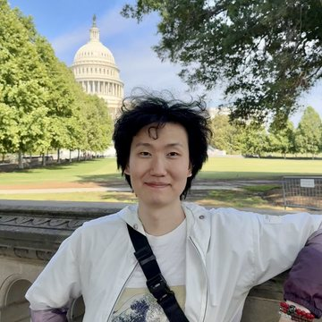

Peng Li
Language, meaning, and computation.
I work on formal semantics, pragmatics, and psycholinguistics, and on how the methods of these fields can be used to evaluate language models. My current project asks how discourse context shifts the interpretation of quantifier-scope ambiguity — sentences like Every kid climbed a tree, which can describe one tree or several.
I hold a B.S. in Data Science and Big Data Technology from The Chinese University of Hong Kong, Shenzhen (2024), with visiting study at the University of Bristol and an ACP certificate in Data Science from UC Irvine. From August 2024 to February 2026 I took graduate coursework in Data Science and Analytics at Georgetown University, including computational linguistics and NLP, and was a teaching assistant for Advanced NLP.
Current research
Independent research · July 2026 – present · manuscript in preparation
Holding Every kid climbed a tree constant, I vary the question it answers and measure whether a language model expects the next sentence to mention the tree or the trees. In a frozen confirmation study with 120 new items and three open-weight models, a question about a shared object shifted the expectation toward the singular in every model, by a seventh to a third of the effect of stating the number outright. What the shift says about scope assignment itself is left open.
A three-person team system for document-grounded question answering: dense retrieval with FAISS, cross-encoder reranking, document upload, and source attribution. Advanced NLP, Fall 2024.
Lexical, syntactic, and sentiment features of fact-checked political statements, and why surface cues classify them poorly. Data Science and Analytics, Fall 2024.